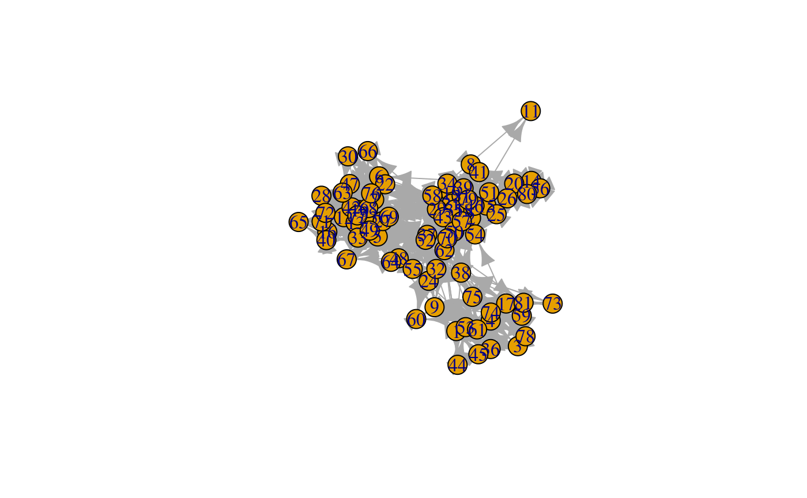
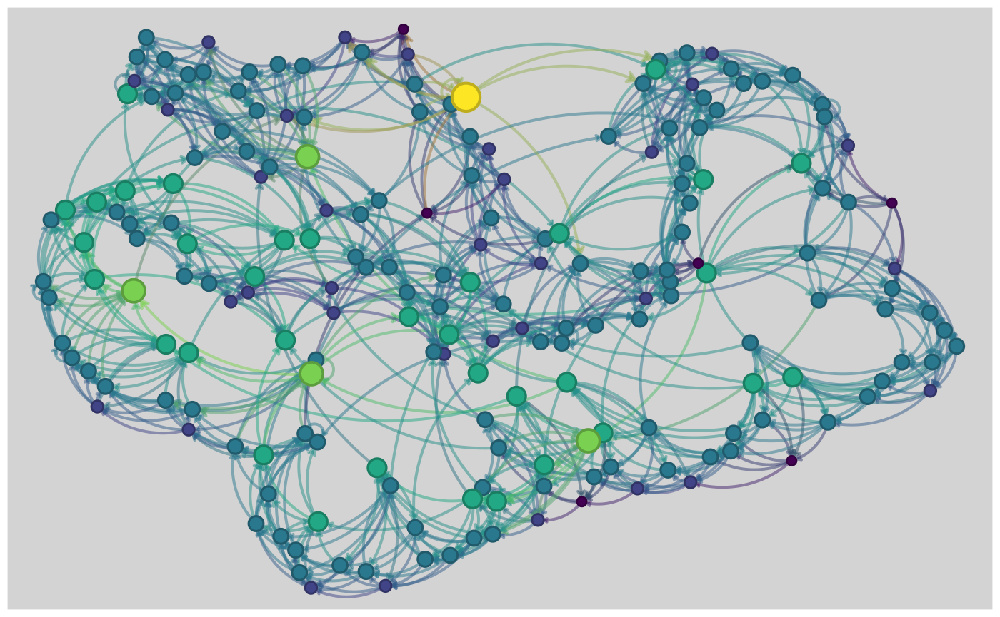
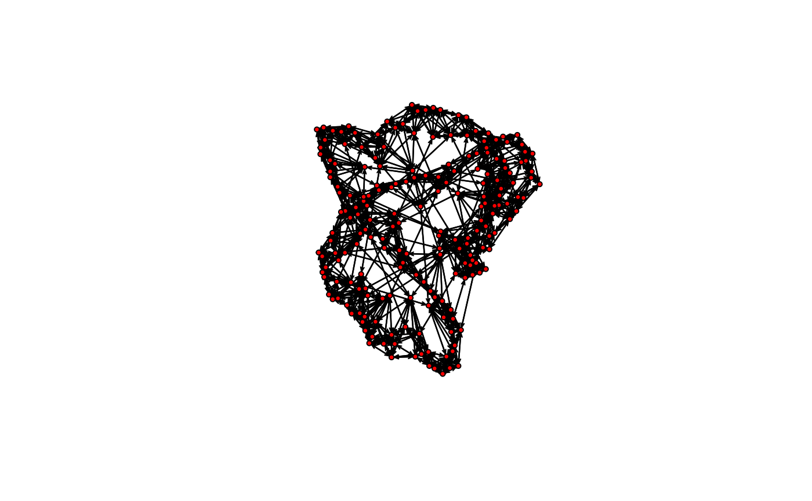
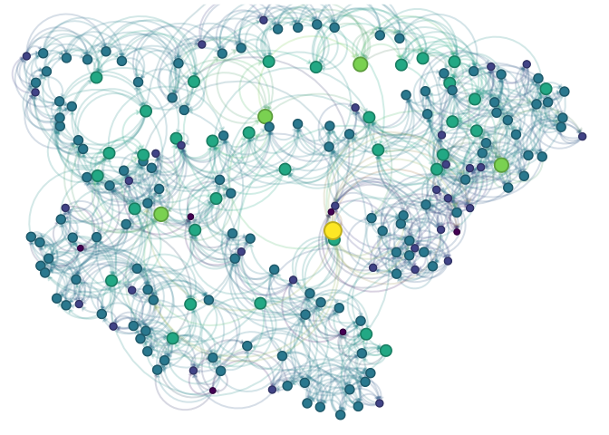

An alternative graph visualization engine that puts an emphasis on aesthetics at the same time of providing default parameters that provide visualizations that are out-of-the-box nice.
Some features:
- Auto-scaling of vertices using sizes relative to the plotting device.
- Embedded edge color mixer.
- True curved edges drawing.
- User-defined edge curvature.
- Nicer vertex frame color.
- Better use of space filling the plotting device.
The package uses the grid plotting system (just like ggplot2).
Installation
And the development version from GitHub with:
# install.packages("devtools")
devtools::install_github("USCCANA/netplot")Example
This is a basic example which shows you how to solve a common problem:
library(igraph)
#>
#> Attaching package: 'igraph'
#> The following objects are masked from 'package:stats':
#>
#> decompose, spectrum
#> The following object is masked from 'package:base':
#>
#> union
library(netplot)
set.seed(1)
data("UKfaculty", package = "igraphdata")
l <- layout_with_fr(UKfaculty)
plot(UKfaculty, layout = l) # ala igraph
nplot(UKfaculty, layout = l) # ala netplot

UKfaculty
# Random names
set.seed(1)
nam <- sample(babynames::babynames$name, vcount(UKfaculty))
ans <- nplot(
UKfaculty,
layout = l,
vertex.color = viridis::plasma(5)[V(UKfaculty)$Group + 1],
vertex.label = nam,
vertex.size.range = c(.01, .04, 4),
vertex.label.col = "black",
vertex.label.fontface = "bold",
bg.col = "transparent",
vertex.label.show = .5,
vertex.label.range = c(10, 25),
edge.width.range = c(1, 4, 5)
)
# Plot it!
ans
USairports
# Loading the data
data(USairports, package="igraphdata")
# Generating a layout naively
layout <- V(USairports)$Position
layout <- do.call(rbind, lapply(layout, function(x) strsplit(x, " ")[[1]]))
layout[] <- stringr::str_remove(layout, "^[a-zA-Z]+")
layout <- matrix(as.numeric(layout[]), ncol=2)
# Some missingness
layout[which(!complete.cases(layout)), ] <- apply(layout, 2, mean, na.rm=TRUE)
# Have to rotate it (it doesn't matter the origin)
layout <- netplot:::rotate(layout, c(0,0), pi/2)
# Simplifying the network
net <- simplify(USairports, edge.attr.comb = list(
weight = "sum",
name = "concat",
Passengers = "sum",
"ignore"
))
# Getting a pretty color
f <- 1.5
col <- adjustcolor(
viridis::plasma(10, direction = -1, alpha = .5)[1],
red.f = f, blue.f = f, green.f = f
)
nplot(
net,
layout = layout,
edge.width = E(net)$Passengers,
edge.color = col,
skip.vertex = TRUE,
vertex.size.range = c(0,0),
edge.width.range = c(.75, 4, 4),
bg.col = "black"
)